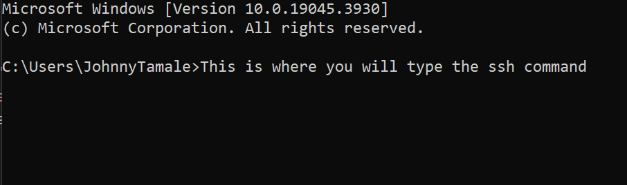
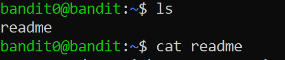

Welcome to Johnny Bandit's walkthrough of Level 0 to Level 1 of the OvertheWire Wargames. The OvertheWire site has a variety of different wargames and the Bandit section is a great way to start especially if you have no prior experience.
It is very likely that you are struggling connecting to the first level and that is alright. It may even be your first time using a command line/terminal as well and that's okay. Every Bandit challenge will require you to connect to another computer via SSH.
While I recommend reading more about SSH, it is simply a method of connectinga and using another computer via the internet. There won't be a modern desktop with buttons to click. Only text to interact with. The command line window will be your best friend.
This walkthrough is meant to get true beginners acquainted with the command line and to get them to make their first ssh connection to OTW's bandit0 challenge.The commands you type in that window will help you complete each challenge.
There are a few ways to access the command line on your computer. If you are on Windows simply type "cmd" in your search bar. On a Mac you can type "terminal" in your spotlight.
You can install Putty on your computer as an alternative. You may also set up a virtual machine with any Linux distribution as well. My suggestion is to simply use what is already on your device's operating system.
Once you have found your terminal/command line you should see something like this.

Pay close attention and you will notice that the cursor prompt has changed. It started with a different username. Now it is bandit0@bandit:~$
This is good news because that means you have established your first SSH connection to a remote computer and if you have never used Linux before, you are now.
Remember this is how you connect to each challenge moving forward the difference is that the username and password will change for every challenge
Now we can move forward with solving Level 0 and getting you to Level 1. You will use the commands "ls" and "cat". There's a lot of background knowledge for each command you will come accross.
Part of the fun is exploration so you won't get an in depth explanation for the commands used in this challenge. Simply "ls" is used to show a list of files on the scrren and "cat" is to display a file's contents.
Use the commands as shown by the image below and you will get the password for the next challenge. I'm not providing the password here. Good Luck and Have Fun!

{kind=link}
{kind=link}